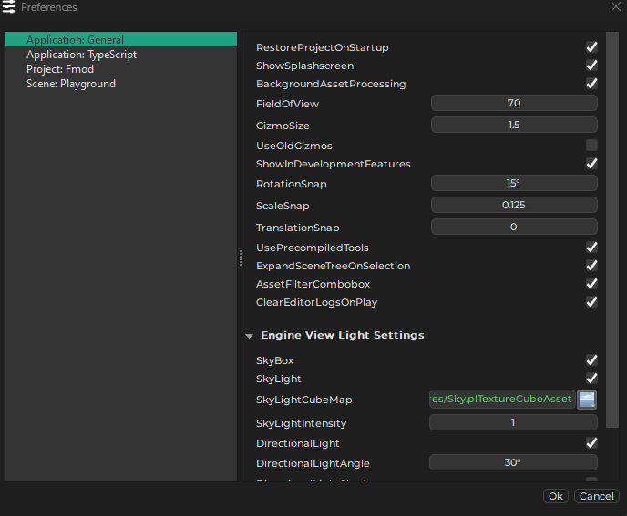
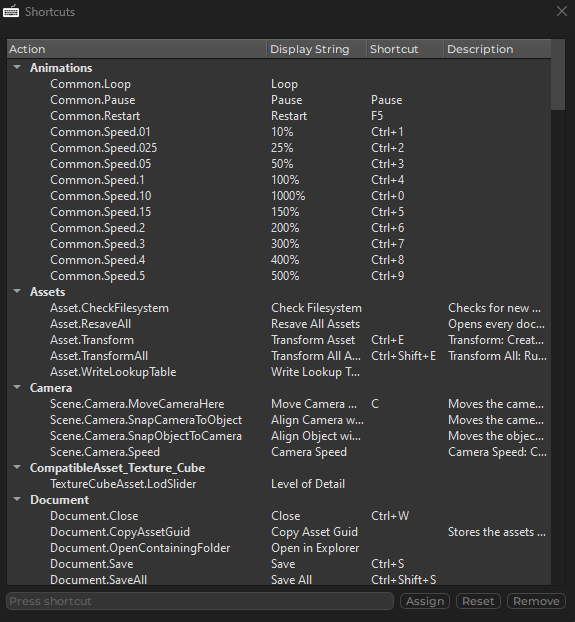

Editor Settings
Editor settings are user specific and independent of projects. They are stored in a OS user folder and thus are not checked into source control.
Preferences
Preferences are user specific editor settings. Preferences may affect the entire editor application, only a certain project, or even just a single document.

The list on the left lists all the available preferences. Items prefixed with Application: affect the general editor, no matter which project is open. Items prefixed with Project: are specific to the currently open project and can be configured differently for other projects. Per-document preferences only show up while a document is open.
Application: General
-
RestoreProjectOnStartup: If enabled, the editor will load the project that was open the last time.
-
ShowSpashscreen: Disable this to not have a splashscreen show up every time the editor starts.
-
BackgroundAssetProcessing: If set, background assets processing will be activated by default, when you open a project.
-
FieldOfView: The FOV of the generic editor camera.
-
GizmoScale: Allows you to change the size of the editor gizmos.
-
ShowInDevelopmentFeatures: Some features (mainly components) are hidden by default from menus. That's because those features are not considered ready to be used productively. If you do want to try them out regardless, check this option for them to show up.
-
UsePrecompiledTools: If enabled, the editor will prefer to use the tools under
Data\Tools\Precompiled, rather than the ones from its own binary directory. The precompiled tools are built with maximum optimizations and are therefore typically faster, however, they only get updated infrequently and may not have all the latest features and bugfixes. -
ExpandSceneTreeOnSelection: If enabled, selecting an object in a scene will automatically expand the corresponding item in the scene tree view. If disabled, the scene tree will not change on selection from the viewport, and jumping to the selected tree item has to be done manually using
CTRL+T. -
ClearEditorLogsOnPlay: If enabled, the engine log gets cleared every time you run a scene.
-
Engine View Light Settings: Many assets have 3D previews that require lighting. These are the lighting settings to use.
Shortcuts
Editor > Editor Settings > Shortcuts... opens a dialog to configure the shortcuts.
